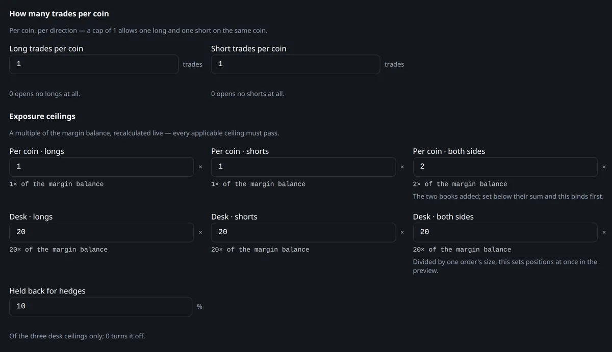
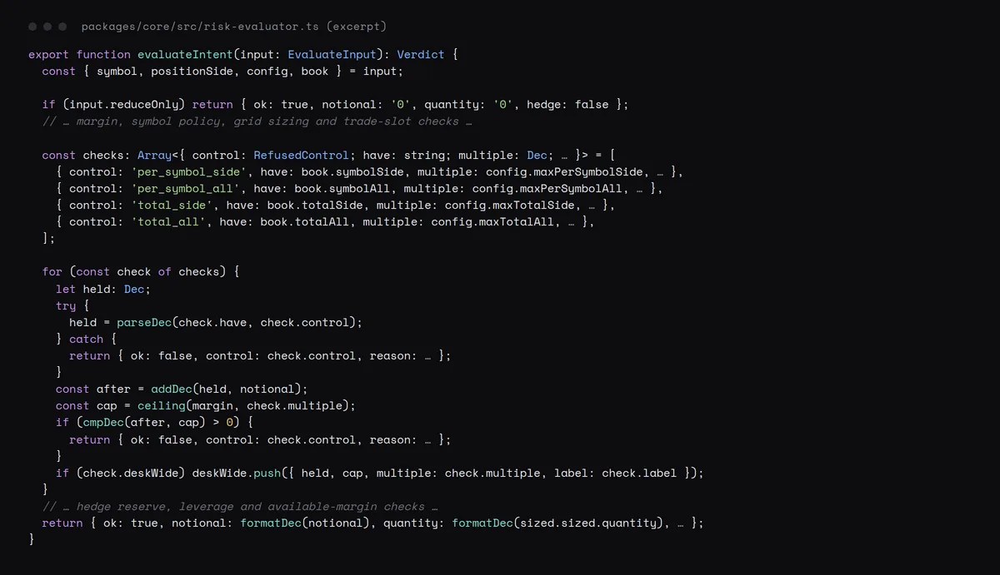
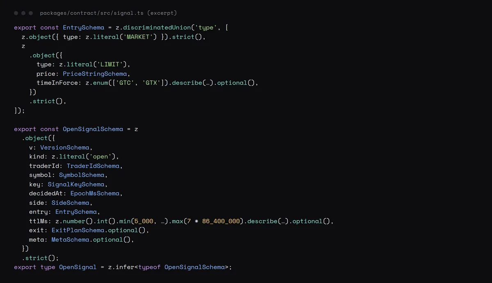

Walkthrough
Inside the product.
Screenshots from a local run on fictional demo data.
Control plane · Next.js dashboard

Trade slots, exposure ceilings and hedge reserve

Per-coin direction and limit exceptions

Per-trader parameters and take-profit cap
Core code

One pure function checks every exposure ceiling

Signal wire contract defined once in zod